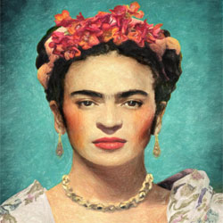
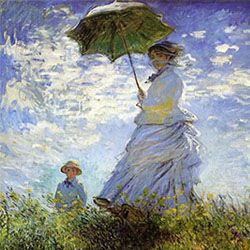
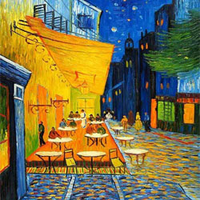
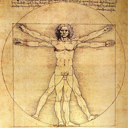

Bem-vindo à artARus, a melhor galeria OnLine do mundo!
... porque a arte também precisa de um lar.Aprecie os nossos destaques deste mês. Inspirados pelo bom tempo que se faz sentir nesta região, esperamos que a nossa escolha artística traga também a luz e o calor à alma de quem nos acompanha.

Frida Kahlo
A arte de Frida Kahlo (1907–1954)

Claude Monet
"Mulher com Sombrinha" (1875)

Vincent van Gogh
"Terraço do Café à Noite" (1888)

Leonardo da Vinci
"O Homem Vitruviano"
(c. 1490)